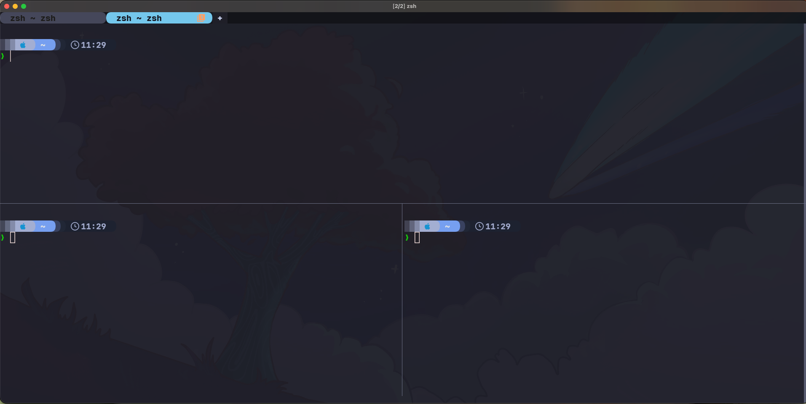
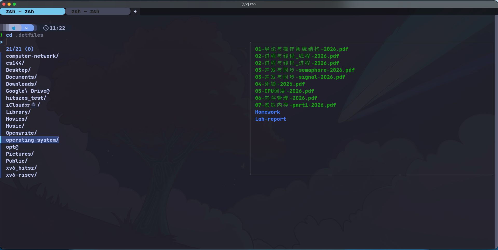
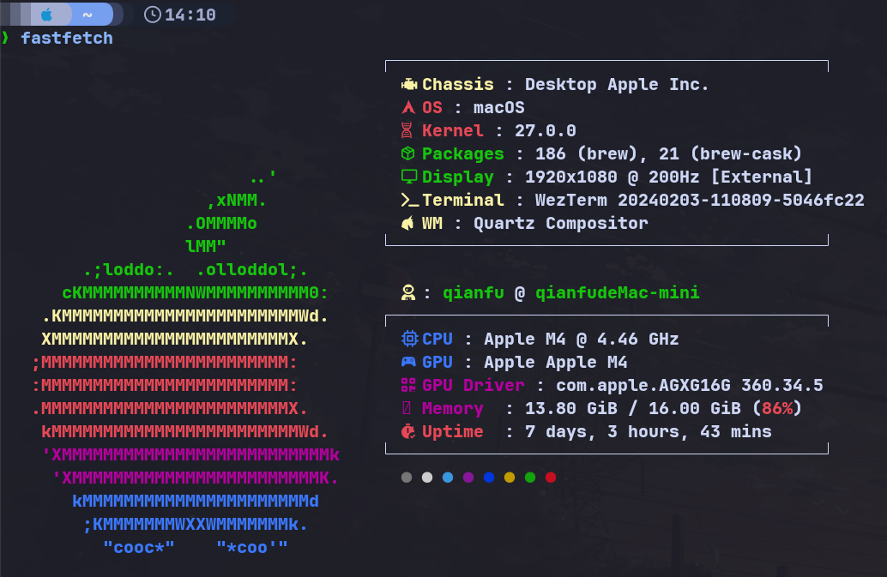
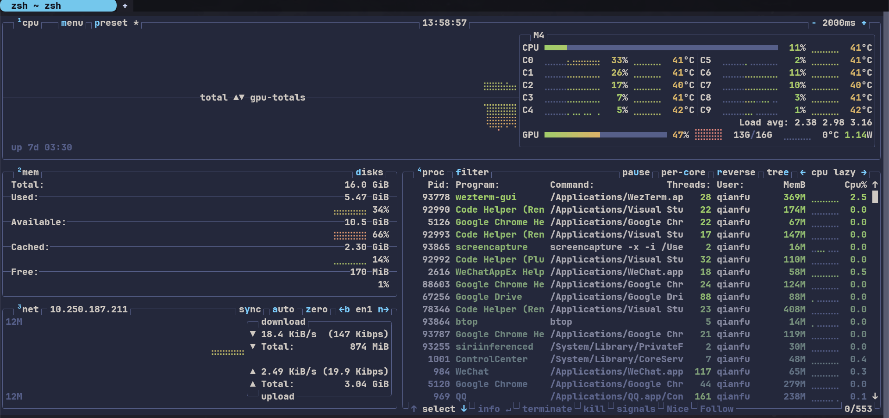

去年在 Linux 101 曾经做过一次配置分享，但是那次为了照顾新手（为了偷懒），用了开箱即用的 Fish 进行讲解，这次讲解我日常用的 Wezterm+zsh 配置，主打一个美观。另外也是看到 MacBook 配置指北,讲的有些笼统，故而想写一期。另外，本文全部的主题配置采用 Tokyo-night 风格或与其相似的风格（喜欢冷峻色调的可以参考），以下是实景图截取:

1. 先分清 Terminal、Shell 和提示符 #
| 层次 | 本文选择 | 负责什么 |
|---|---|---|
| Terminal | WezTerm | 窗口、字体、配色、标签页、分屏和键盘输入 |
| Shell | zsh | 解释命令、变量、管道、补全和历史记录 |
| 插件管理器 | zinit | 下载、加载和更新 zsh 插件 |
| Prompt提示符 | Starship | 显示当前路径、Git 状态、语言环境和时间 |
| 命令行工具 | fzf、eza 等 | 搜索、浏览文件、跳转目录和查看系统状态 |
例如，WezTerm 的背景图片由 Lua 配置控制，输入命令时的语法高亮由 zsh 插件控制，路径前面的彩色提示符则由 Starship 控制。调整外观时，先确定自己要改的是哪一层。
2. 安装工具 #
安装列表中也包含文件查找工具 fd，可以按需使用。本文的 Tab 搜索候选由 zsh 补全系统提供，zsh 插件统一通过 zinit 安装。
2.1 macOS #
brew install --cask wezterm font-jetbrains-mono-nerd-font
brew install git curl fzf fd eza zoxide bat fastfetch btop starshipmacOS 已自带 zsh，不必重复安装 zsh
2.2 Arch Linux #
sudo pacman -Syu --needed wezterm zsh git curl fzf fd eza zoxide bat fastfetch btop starship ttf-jetbrains-mono-nerd ttf-nerd-fonts-symbols-mono或使用 paru找到对应包进行下载。
2.3 Ubuntu #
先安装发行版提供的工具：
sudo apt update
sudo apt install zsh git curl gpg unzip fontconfig fzf fd-find eza zoxide bat btop若软件包提示没有候选版本，先确认已启用 Ubuntu 的 Universe 仓库。较老版本没有 eza 时，可按照 eza 官方安装文档 添加项目提供的软件源。
按照 WezTerm 官方 APT 安装说明 添加软件源，再安装 WezTerm：
curl -fsSL https://apt.fury.io/wez/gpg.key \
| sudo gpg --yes --dearmor -o /usr/share/keyrings/wezterm-fury.gpg
sudo chmod 644 /usr/share/keyrings/wezterm-fury.gpg
echo 'deb [signed-by=/usr/share/keyrings/wezterm-fury.gpg] https://apt.fury.io/wez/ * *' \
| sudo tee /etc/apt/sources.list.d/wezterm.list
sudo apt update
sudo apt install weztermStarship 可以使用其 官方安装器。下面先下载脚本，再执行：
curl -fsSL https://starship.rs/install.sh -o /tmp/starship-install.sh
sh /tmp/starship-install.shfastfetch 在 Ubuntu 25.04 及更新版本可以直接安装：
sudo apt install fastfetchUbuntu 24.04 可以使用 fastfetch 项目列出的 PPA：
sudo apt install software-properties-common
sudo add-apt-repository ppa:zhangsongcui3371/fastfetch
sudo apt update
sudo apt install fastfetch字体请从 Nerd Fonts 的 JetBrains Mono 发布页 下载 JetBrainsMono.zip，解压到用户字体目录：
mkdir -p ~/.local/share/fonts/JetBrainsMono
unzip ~/Downloads/JetBrainsMono.zip -d ~/.local/share/fonts/JetBrainsMono
fc-cache -fvUbuntu 中 bat 的可执行文件可能叫 batcat，fd 叫 fdfind。可以执行下面的命令建立用户级软链接，统一后文使用的命令名。fzf 的预览子进程也需要找到它们，单独设置交互式 alias 不够：
mkdir -p "$HOME/.local/bin"
if ! command -v bat >/dev/null && command -v batcat >/dev/null; then
ln -s "$(command -v batcat)" "$HOME/.local/bin/bat"
fi
if ! command -v fd >/dev/null && command -v fdfind >/dev/null; then
ln -s "$(command -v fdfind)" "$HOME/.local/bin/fd"
fi2.4 切换到 zsh #
先确认当前使用的版本和路径：
zsh --version
command -v zsh如需把 zsh 设为登录 Shell：
chsh -s "$(command -v zsh)"重新登录后生效。不过后面还会直接指定 WezTerm 启动 zsh，因此不修改登录 Shell 也能在 WezTerm 中使用。
3. WezTerm：直接使用完善的跨平台配置 #
3.1 获取配置 #
WezTerm 使用 Lua 配置。本文采用的 KevinSilvester/wezterm-config 已经把配置拆成多个模块，不需要把所有选项挤在一个文件里。
先关闭正在使用这套配置的 WezTerm 窗口，在其他终端中备份已有配置，再克隆：
mkdir -p ~/.config
if [ -e ~/.config/wezterm ] || [ -L ~/.config/wezterm ]; then
mv ~/.config/wezterm ~/.config/wezterm.backup-"$(date +%Y%m%d-%H%M%S)"
fi
git clone https://github.com/KevinSilvester/wezterm-config.git ~/.config/wezterm常用文件的位置如下：
~/.config/wezterm/
├── wezterm.lua # 入口，组合各模块并注册事件
├── config/
│ ├── appearance.lua # 背景、窗口、光标和渲染选项
│ ├── bindings.lua # 快捷键
│ ├── domains.lua # SSH、WSL 等连接
│ ├── fonts.lua # 字体与字号
│ ├── general.lua # 回滚行数、自动重载等行为
│ └── launch.lua # 默认 Shell 与启动菜单
├── events/ # 状态栏、标签标题等事件
├── utils/ # 平台判断、背景图、GPU 等辅助逻辑
└── backdrops/ # 背景图片注意 clone 后第一次打开 wezterm 大概率会报错（因为你没有安装 fish），详情见下一节内容将默认 shell 换成 zsh 即可。同时上游已经提供了相当完整的功能，首次使用重点检查 启动程序、字体和机器相关路径，之后再慢慢调整外观，如果后续配置时发现 shell 的 prompt提示符出现乱码，请检查字体是否安装完成。
3.2 默认启动 zsh #
编辑 config/launch.lua，在 macOS 和 Linux 对应分支中设置：
options.default_prog = { 'zsh', '-l' }
options.launch_menu = {
{ label = 'Zsh', args = { 'zsh', '-l' } },
{ label = 'Bash', args = { 'bash', '-l' } },
}-l 表示以登录 Shell 启动。若找不到 zsh，就把 'zsh' 换成 command -v zsh 返回的绝对路径。启动菜单只保留自己实际安装的 Shell 即可。
3.3 字体、背景和渲染 #
在配置使用 JetBrainsMono Nerd Font。在 config/fonts.lua 中，可以先从正常字重和适中的字号开始：
local wezterm = require('wezterm')
local platform = require('utils.platform')
return {
font = wezterm.font('JetBrainsMono Nerd Font'),
font_size = platform.is_mac and 15 or 12,
}Nerd Font 包含提示符、文件列表使用的图标。只下载字体还不够，终端必须实际选中它。
想要的背景图片放在 backdrops/ 下，每次打开会随机选取一张背景图片显示。
3.4 记住几个常用快捷键 #
这套配置在 macOS 上用 Command 作为 SUPER，在 Linux 和 Windows 上用 Alt；SUPER_REV 则在此基础上加 Ctrl。下面是上游配置中的常用操作，具体以自己的 config/bindings.lua 为准：
| 快捷键 | 用途 |
|---|---|
SUPER + t |
新建标签页 |
SUPER + n |
新建窗口 |
SUPER + \ |
分成上下两个窗格 |
SUPER_REV + \ |
分成左右两个窗格 |
SUPER + Enter |
放大或还原当前窗格 |
SUPER + w |
关闭当前窗格 |
SUPER + f |
搜索终端中的文字 |
F2 |
打开命令面板 |
SUPER + b |
切换背景图片与专注模式 |
跨系统复用时，保留模块结构与常用操作，只调整平台相关部分即可。上游的 完整快捷键表 可以随时查阅。
4. .zshrc：先掌握基础用法
#
~/.zshrc 是交互式 zsh 的用户配置文件，打开新的 zsh 会话时会读取它。这里先讲环境变量、别名、历史记录和配置拆分；各工具的配置放在对应章节，读到时再添加到 .zshrc，相同内容只保留一份。
4.1 编辑与备份配置 #
修改前先备份已有文件：
if [ -e ~/.zshrc ] || [ -L ~/.zshrc ]; then
cp -L ~/.zshrc ~/.zshrc.backup-"$(date +%Y%m%d-%H%M%S)"
fi使用自己熟悉的编辑器打开 ~/.zshrc 即可。以 # 开头的内容是注释，可以用来标记各段配置的用途；本节中的命令与后面的插件、工具设置都是独立片段，不需要先复制一整份配置。
4.2 用 export 配置镜像与路径
#
export NAME=value 将变量放入环境，后续从当前 Shell 启动的程序可以读取它。只在终端执行一次，通常仅对当前会话及其子进程有效；写进配置文件后，新启动的对应 Shell 才会自动获得。
例如使用 Export 可以为 pip 和 uv 设置了南科大的 PyPI 镜像：
export PIP_INDEX_URL='https://mirrors.sustech.edu.cn/pypi/web/simple'
export UV_INDEX_URL='https://mirrors.sustech.edu.cn/pypi/web/simple'两者分别影响 pip 和 uv，设置其中一个不代表其他包管理器都会换源。镜像地址和使用方式以 南科大镜像帮助 为准。
另外，在 .zshrc 中加入以下配置，将用户级可执行文件目录加入 PATH。请放在插件和工具初始化之前，确保 Ubuntu 中创建的 bat、fd 软链接也能被 fzf 预览子进程找到：
typeset -U path
path=("$HOME/.local/bin" $path)
export PATHpath 是 zsh 中与 PATH 关联的数组，typeset -U 会去除重复目录。保存后，新开的 zsh 会话即可使用这一路径。
4.3 用 alias 配置别名
#
alias 是对命令开头的快捷替换，例如：
alias c='clear'
alias q='exit'4.4 保存与共享历史记录 #
zshrc 亦可以控制历史记录的保存位置、数量和去重行为：
HISTFILE="$HOME/.zsh_history"
HISTSIZE=10000
SAVEHIST=$HISTSIZE
setopt APPEND_HISTORY
setopt SHARE_HISTORY
setopt HIST_IGNORE_SPACE
setopt HIST_IGNORE_ALL_DUPS
setopt HIST_SAVE_NO_DUPS
setopt HIST_IGNORE_DUPSHISTFILE 指定保存位置，HISTSIZE 控制内存中的条数，SAVEHIST 控制写入文件的条数。
| 选项 | 用途 |
|---|---|
APPEND_HISTORY |
以追加方式保存历史 |
SHARE_HISTORY |
在多个 zsh 会话间导入和追加历史命令 |
HIST_IGNORE_SPACE |
不保留以空格开头的历史命令 |
HIST_IGNORE_ALL_DUPS |
出现重复命令时，删除旧的重复项 |
HIST_SAVE_NO_DUPS |
写入文件时过滤重复项 |
HIST_IGNORE_DUPS |
不连续记录相同命令 |
启用 HIST_IGNORE_ALL_DUPS 后，连续重复也已被涵盖，因此 HIST_IGNORE_DUPS 可以省略。多个窗口共享的是本机的同一历史文件，不会自动跨电脑同步；用 history 可以查看记录，历史搜索交互则放到后面的插件章节介绍。
5. zinit：分别配置补全、输入建议与高亮 #
5.1 为什么选 zinit #
Oh My Zsh 很流行，开箱即用也方便。不过，对本文只需要几项插件和独立提示符的配置而言，Oh My Zsh 显得比较臃肿：整套框架、主题机制和附带配置增加了需要理解和维护的内容。这里选用 zinit，按需声明插件，外观交给 Starship。
若原先使用 Oh My Zsh，请先备份 .zshrc，迁移自己需要的环境变量和别名，再用下面的配置替换；同一个 .zshrc 里只保留一套插件初始化和提示符初始化。
5.2 安装与初始化 zinit #
先在 .zshrc 中加入管理器本身的初始化，后面的 zinit light 都需要放在这段之后：
ZINIT_HOME="${XDG_DATA_HOME:-$HOME/.local/share}/zinit/zinit.git"
if [[ ! -f "$ZINIT_HOME/zinit.zsh" ]]; then
mkdir -p "${ZINIT_HOME:h}"
git clone https://github.com/zdharma-continuum/zinit.git "$ZINIT_HOME"
fi
source "$ZINIT_HOME/zinit.zsh"第一次运行时会克隆 zinit。zinit light 用户名/仓库名 用于安装并加载插件，日后用 zinit update --all 更新已安装插件。
延后加载如何工作 #
在 .zshrc 可以使用 zinit 的 Turbo 模式，把插件加载推迟到首个提示符出现之后。这样可以先进入可输入命令的界面，再完成补全、输入建议和高亮等交互功能的初始化，加快速度：
zinit ice wait lucid
zinit light zdharma-continuum/history-search-multi-word这里用历史搜索插件说明两行配置的关系，具体功能见第 5.6 节，同一个插件只声明一次。ice 修饰符只作用于下一次插件加载，所以每个需要延后的插件前都要分别声明。
| 写法 | 作用 |
|---|---|
wait |
默认等同于 wait'0'，在首个提示符出现后调度加载 |
wait'1' |
提示符出现约一秒后再加载，适合不急于使用的插件 |
lucid |
不显示延后加载的 Loaded ... 消息，保持提示符区域整洁 |
blockf |
阻止插件自行修改 fpath，由 zinit 管理补全的安装与暴露 |
atload'命令' |
在对应插件加载完成后执行命令 |
同为 wait 的插件按声明顺序调度，因此把补全初始化放在 fzf-tab 之前，把输入建议和高亮放在它之后。阅读章节的顺序与最终配置中的排列顺序可以不同。
5.3 zsh-completions：扩充补全规则 #
zsh 自带补全系统，zsh-completions 为更多命令补充参数、子命令等定义：
zinit ice wait lucid blockf atload'zicompinit; zicdreplay'
zinit light zsh-users/zsh-completions
zstyle ':completion:*:descriptions' format '[%d]'
zstyle ':completion:*:git-checkout:*' sort false
zstyle ':completion:*' menu no5.4 zsh-autosuggestions：显示输入建议 #
zsh-autosuggestions 会根据历史命令等来源，在光标后显示淡色建议。它和按 Tab 打开的补全列表是两种交互,如果想直接应用之前的历史记录不能按 Tab 而是要按方向右键：
ZSH_AUTOSUGGEST_HIGHLIGHT_STYLE='fg=#6c7086'
zinit ice wait lucid atload'_zsh_autosuggest_start'
zinit light zsh-users/zsh-autosuggestions颜色在插件加载之前声明，atload 在延后加载完成后调用 _zsh_autosuggest_start，启动输入建议。输入以前用过的命令开头，再按右方向键，就能接受显示出来的建议。
5.5 fsh：输入时的语法高亮 #
fast-syntax-highlighting，简称 fsh 会在输入时区分命令、参数、字符串、路径和可能的语法问题：
zinit ice wait lucid
zinit light zdharma-continuum/fast-syntax-highlighting它改变的是当前命令行的颜色，不控制 Starship 提示符，也不负责 bat 查看文件时的高亮。这里同样通过 wait lucid 延后加载，并放在 fzf-tab 与 autosuggestions 的加载声明之后。
按 fzf-tab 的兼容说明，它需要在 compinit 之后、会包装编辑控件的 autosuggestions 和 fsh 之前加载。配置在不同章节展示，最终组合时仍应保留这个顺序。
5.6 按多个关键词搜索历史 #
配置文件还使可以用 history-search-multi-word：
zinit ice wait lucid
zinit light zdharma-continuum/history-search-multi-word按 Ctrl + R 打开历史搜索，输入多个关键词，筛选同时包含这些关键词的历史命令。前面第 4.4 节决定“保存哪些记录”，这个插件决定“怎样查找记录”。下一节的 fzf-tab 则用于当前命令的 Tab 补全，两者分别配置。
6. 几款值得用起来的工具 #
6.1 fzf + fzf-tab：按 Tab 搜索补全 #
fzf 提供模糊搜索界面，fzf-tab 将它接到 zsh 的补全系统。两者配合后，日常使用只需要记住：按 Tab 打开候选列表，输入关键词筛选，再按回车确认。
前面已经安装 fzf，并通过 zsh-completions 配置了补全规则。在 .zshrc 中，将下面这段放在补全配置之后、autosuggestions 和 fsh 之前：
zinit ice wait lucid
zinit light Aloxaf/fzf-tab
zstyle ':fzf-tab:*' fzf-flags \
'--color=fg:#c0caf5,bg:-1,hl:#bb9af7' \
'--color=fg+:#c0caf5,bg+:#33467c,hl+:#7dcfff' \
'--color=info:#7aa2f7,prompt:#7dcfff,pointer:#7dcfff' \
'--color=marker:#9ece6a,spinner:#9ece6a,header:#9ece6a'
zstyle ':fzf-tab:complete:cd:*' fzf-preview 'eza -1 --color=always -- $realpath'
zstyle ':fzf-tab:complete:*:*' fzf-preview 'if [[ -d $realpath ]]; then eza -1 --color=always -- $realpath; elif [[ -f $realpath ]]; then bat -n --color=always --line-range :500 -- $realpath; fi'wait lucid 延续前面的延后加载方式，配色采用 Tokyo Night 风格。预览使用 eza 展示目录、bat 展示文件内容，$realpath 表示当前候选对应的路径。
配置生效后，可以直接这样操作：
输入后按 Tab |
可以搜索的补全候选 |
|---|---|
cd |
目录 |
bat |
文件路径 |
git switch |
Git 分支 |
出现列表后输入关键词缩小范围，用方向键选择，按 Enter 将候选填入命令行，按 Esc 取消。候选仍由 zsh 的补全规则提供，搜索范围取决于当前命令和路径；fzf-tab 负责筛选与展示。有多个候选时会打开选择界面，只有一个候选时可能直接补全。
这套 Tab 补全只需加载 fzf-tab，无需额外添加 eval "$(fzf --zsh)"。重开终端，等延后加载完成后即可使用。
最终插件配置顺序 #
完成以上配置后，可以用下面的组合示例核对 .zshrc。这段汇总了第 5 节和本节的初始化、插件与补全设置，应替换对应片段，不要重复追加；前面的环境变量和 PATH 配置仍放在它之前，后面的 zoxide、Starship 初始化则放在它之后。
ZINIT_HOME="${XDG_DATA_HOME:-$HOME/.local/share}/zinit/zinit.git"
if [[ ! -f "$ZINIT_HOME/zinit.zsh" ]]; then
mkdir -p "${ZINIT_HOME:h}"
git clone https://github.com/zdharma-continuum/zinit.git "$ZINIT_HOME"
fi
source "$ZINIT_HOME/zinit.zsh"
zstyle ':completion:*:descriptions' format '[%d]'
zstyle ':completion:*:git-checkout:*' sort false
zstyle ':completion:*' menu no
zstyle ':fzf-tab:*' fzf-flags \
'--color=fg:#c0caf5,bg:-1,hl:#bb9af7' \
'--color=fg+:#c0caf5,bg+:#33467c,hl+:#7dcfff' \
'--color=info:#7aa2f7,prompt:#7dcfff,pointer:#7dcfff' \
'--color=marker:#9ece6a,spinner:#9ece6a,header:#9ece6a'
zstyle ':fzf-tab:complete:cd:*' fzf-preview 'eza -1 --color=always -- $realpath'
zstyle ':fzf-tab:complete:*:*' fzf-preview 'if [[ -d $realpath ]]; then eza -1 --color=always -- $realpath; elif [[ -f $realpath ]]; then bat -n --color=always --line-range :500 -- $realpath; fi'
# 扩充补全规则，然后初始化补全系统
zinit ice wait lucid blockf atload'zicompinit; zicdreplay'
zinit light zsh-users/zsh-completions
# fzf-tab 必须在 compinit 之后、输入建议和高亮插件之前加载
zinit ice wait lucid
zinit light Aloxaf/fzf-tab
ZSH_AUTOSUGGEST_HIGHLIGHT_STYLE='fg=#6c7086'
zinit ice wait lucid atload'_zsh_autosuggest_start'
zinit light zsh-users/zsh-autosuggestions
zinit ice wait lucid
zinit light zdharma-continuum/fast-syntax-highlighting
# Ctrl + R：按多个关键词搜索历史
zinit ice wait lucid
zinit light zdharma-continuum/history-search-multi-word
6.2 eza：更好的 ls 工具 #
eza 提供颜色、图标、目录树和 Git 状态等信息：
eza -lah --git --group-directories-first --icons=auto
eza --tree --level=2可以在 .zshrc 中加入下面的别名，把常用文件浏览操作交给 eza：
alias ls='eza --group-directories-first --icons=always --color=always'
alias la='eza -a --group-directories-first --icons=always --color=always'
alias ll='eza -lah --git --group-directories-first --icons=auto'前两行的映射始终输出图标和颜色；ll 则示范自动判断输出环境。--icons=auto 只在合适的终端输出中展示图标，目录优先也方便快速浏览。需要原来的命令时，用 command ls 绕过 alias 即可。
6.3 zoxide：少打几次长路径 #
zoxide 会记录访问过的目录，结合访问频率和最近访问情况帮助跳转。
使用如下初始方式可以将 cd 切换为 zoxide
eval "$(zoxide init zsh --cmd cd)"假设你曾经进入过 ~/A/B/test，之后可以直接在根目录下直接跳转 ：
cd test6.4 bat：带高亮和行号地查看文件 #
bat 适合阅读代码和配置文件，支持语法高亮、行号、Git 修改标记和分页：
bat ~/.zshrc
bat --line-range 1:80 ~/.config/starship.toml
bat --paging=never --style=plain README.md如果习惯继续输入 cat，可以在 .zshrc 中配置：
alias cat='bat'可以使用 bat --list-themes 查看可用主题及配色预览，再选择自己喜欢的主题：
bat --list-themes以 Catppuccin Frappe 为例，在 ~/.zshrc 中加入：
export BAT_THEME='Catppuccin Frappe'主题名以列表中显示的完整名称为准。保存后重新打开终端，bat 就会使用所选主题。
6.5 fastfetch：快速展示系统信息 #
fastfetch 用来查看操作系统、内核、CPU、内存、终端等信息，适合检查环境和展示桌面配置：
fastfetch配置文件通常为 ~/.config/fastfetch/config.jsonc。
迁移时建议先采用下面的基础配置：
{
"logo": { "type": "auto" },
"display": { "separator": " : " },
"modules": [
"title",
"separator",
"os",
"kernel",
"uptime",
"shell",
"terminal",
"cpu",
"memory",
"disk",
"colors"
]
}想在打开终端时自动展示，可以在 .zshrc 末尾添加 fastfetch；这里建议按需手动运行，避免每次打开窗格都输出一屏信息。

6.6 btop：查看实时资源占用 #
btop 用于观察 CPU、内存、磁盘、网络和进程的实时状态。fastfetch 展示环境概况，btop 更适合查看“现在是谁占用了资源”。
btop可以通过界面的菜单查看按键帮助和调整主题，按 q 退出。
笔者使用 Tokyo Storm 配色。若安装包未提供，可从 btop 上游主题目录 获取 tokyo-storm.theme，放入 ~/.config/btop/themes/，再在 btop 的选项菜单中选择。

7. Starship：使用 Tokyo Night 提示符 #
WezTerm 配色决定终端的基础颜色，fsh 控制正在编辑的命令，Starship 则负责命令前面的提示符。这几层可以分别选择配色；本文的提示符采用 Tokyo Night。
7.1 生成官方预设 #
先备份已有配置，再生成 Starship 官方 Tokyo Night 预设：
mkdir -p ~/.config
if [ -f ~/.config/starship.toml ]; then
cp ~/.config/starship.toml ~/.config/starship.toml.backup-"$(date +%Y%m%d-%H%M%S)"
fi
starship preset tokyo-night -o ~/.config/starship.toml再将初始化语句放在 .zshrc 的末尾，保留一份即可：
eval "$(starship init zsh)"重开终端后，就能看到由路径、Git 分支及状态、语言环境、时间等模块组成的提示符。图标和分隔符需要前面安装的 Nerd Font。
7.2 风格配置 #
作者的 Starship 配置 以 Tokyo-Night 风格为基础，增加了操作系统图标、更多语言模块和耗时显示。配置中的 format 决定模块顺序，各个 [模块名] 小节决定内容和样式。
例如，可以在已有的 [directory]、[time] 小节中修改这些字段：
[directory]
truncation_length = 3
truncation_symbol = "…/"
style = "fg:#e3e5e5 bg:#769ff0"
format = "[ $path ]($style)"
[time]
disabled = false
time_format = "%R"
style = "bg:#1d2230"
format = '[[ $time ](fg:#a0a9cb bg:#1d2230)]($style)'8. 检查与排错 #
编辑完成后，先检查 zsh 语法，再启动一个新会话：
zsh -n ~/.zshrc
exec zsh -lzsh -n 只检查语法，不验证依赖是否已安装、插件是否能下载或初始化是否成功。反复 source ~/.zshrc 容易重复执行插件和按键初始化，检查效果时优先重开终端或使用 exec zsh -l。
遇到问题时可以从下面几处查起：
| 现象 | 检查方向 |
|---|---|
| 图标或提示符分隔符变成方框 | 是否安装并在 WezTerm 中启用了 Nerd Font |
bat 或 fd 找不到 |
Ubuntu 的 batcat、fdfind 链接是否建立，~/.local/bin 是否在 PATH 中 |
| 按 Tab 没有打开搜索列表 | 用 fzf --version 确认已安装，并检查 fzf-tab 是否已完成延后加载 |
Tab 没有预期补全 |
检查 zsh-completions → compinit → fzf-tab → autosuggestions → fsh 的加载顺序 |
compinit 提示目录权限问题 |
用 compaudit 查看具体目录，再修正对应目录的归属和权限 |
| WezTerm 修改没有生效 | 检查实际读取的配置文件、入口模块及是否存在优先级更高的旧配置 |
| bat 主题找不到 | 运行 bat --list-themes，确认主题已安装并重建缓存 |
| btop 或 fastfetch 换机器后报错 | 检查主题绝对路径，以及 Hyprland、自定义脚本等本机依赖 |
最后可以实际走一遍日常操作：打开新标签页，输入命令观察高亮，按 Tab 搜索并选择补全，用 history 查看历史，再通过 cd 跳转到访问过的目录。配置是否顺手，最终还是要回到这些每天重复的操作上。